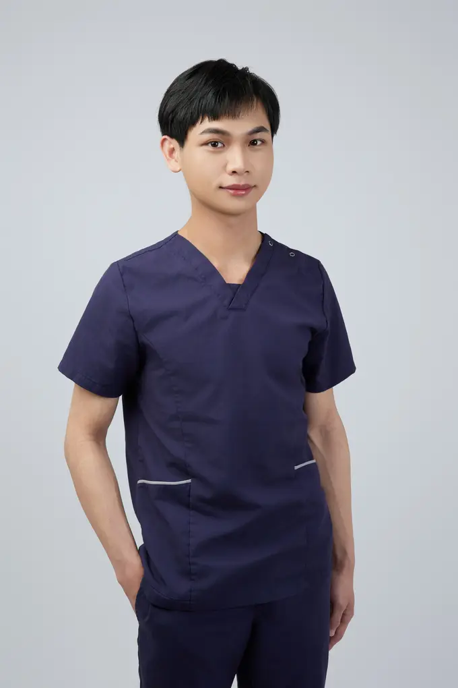

四條路，走向同一個身體
從三鐵訓練後的修復，到紅繩上的深層穩定；從車架上的毫米調校，到一次五克的輕觸——徒手治療的方法不同，目的相同：讓身體回到它原本的樣子。
公路車專項分析
結合 Bike Fitting 與物理治療評估：量的是車，看的是人。從接觸點、關節角度到動作品質，處理騎乘中的疼痛與功率流失。
疼痛治療與管理
以現代疼痛科學為基礎，理解疼痛不等於損傷。透過教育、漸進負荷與生活策略，把神經系統的警報音量，一格一格轉回來。
顱薦椎整合 × 情緒能量釋放
大約五克的輕觸，讓長期戒備的神經系統願意鬆手。在安全與知情的前提下，陪伴身體完成那些一直沒機會完成的釋放。
你是不是也有這些狀況？
來找我的人，多半不是「哪裡斷了」，而是「一直好不了」。下面這些情況很常見，也都有機會改善——點進去，有對應主題的免費衛教文章。
騎車騎到下背痛、膝蓋痛、手麻
騎乘疼痛常常不是「練太多」，而是車架、騎姿和身體能力沒對上。先看人、再調車，兩邊一起處理才不會反覆。
下背痛反覆發作，休息就好、一動又痛
大部分下背痛跟「骨頭壞掉」無關，而是負荷超過身體當下能承受的量。找出誘發動作、慢慢把能力練回來，是最實在的路。
肩膀卡卡、舉手會痛、游泳划不開
肩膀是活動度最大的關節，也最仰賴周邊肌肉的協調。除了放鬆緊繃處，更要讓肩胛骨和核心重新學會一起工作。
全身緊繃、按摩完只舒服一下子
筋膜像一件包住全身的緊身衣，一處拉緊，遠處也會被牽動。高級筋膜技術從張力來源下手，而不是哪裡痛就只按哪裡。
檢查都正常，卻痛了好幾個月
疼痛是大腦發出的保護警報，不是損傷的計量表。慢性疼痛時警報變得太敏感——理解它、再用漸進活動把音量調回來。
壓力大、睡不好、咬牙、頭頸常緊繃
身體長期處在「備戰模式」，肌肉自然放不下來。輕柔的顱薦椎手法協助自律神經切回休息模式，讓緊繃從根本鬆開。
第一次來，會做什麼？
評估不是走個流程，而是整個療程的地圖。地圖畫得準，後面每一次治療才不會白費力氣。一對一的時間裡，我會先聽、再看、最後才動手。
- 聽你說什麼時候開始痛？做什麼會更痛、什麼會比較好？訓練量、工作型態、睡眠和壓力，都是找線索的地方。
- 看你動姿勢、關節活動度、肌力與動作控制；騎車的人會一起看騎姿與車架設定，跑步、游泳則看動作模式。
- 找出根源，說清楚用你聽得懂的話解釋問題從哪裡來、為什麼會痛，以及合理的恢復時間，不給速效保證。
- 治療與回家功課依評估結果選擇徒手、紅繩或顱薦椎等方式，並帶走幾個簡單、做得到的居家運動。
預約前，大家最常問的事
Sky 在台北哪裡看診？
我在台北市北投區與士林區看診，天母、石牌、北投、士林、芝山一帶都很方便。採預約制，線上預約後會告訴你確切地點。想知道怎麼挑一位適合自己的台北物理治療師，可以看台北物理治療師推薦指南；也有分區說明：北投、士林、石牌。三鐵選手可以先讀三鐵運動修復。
我不是運動員，也可以來嗎？
當然可以。三鐵和公路車是我的專長，但久坐上班族的肩頸痛、媽媽的下背痛、長輩的膝蓋痛，處理邏輯是一樣的：找出負荷從哪裡來，再把身體的能力練回來。
物理治療和按摩、整復有什麼不同？
物理治療師是國家考試合格的醫事人員，重點在「評估」與「訓練」：不只放鬆痛的地方，而是找出為什麼會痛，並教你怎麼讓它不再回來。
治療會痛嗎？
可能會有痠、有伸展感，但不應該是咬牙硬撐的劇痛。顱薦椎手法更是只用約五克的輕觸。過程中任何不舒服，隨時說，我會調整。
要來幾次才會好？
看問題而定。急性、單純的狀況可能幾次內就明顯改善；累積多年的慢性問題需要時間重新訓練。評估後我會給你合理的預期，而不是保證速效。
需要準備什麼？
穿方便活動的衣服即可；如果有 X 光、MRI 等檢查報告可以一起帶來。想做騎姿分析的車友，請帶著自己的車、車鞋與車褲。